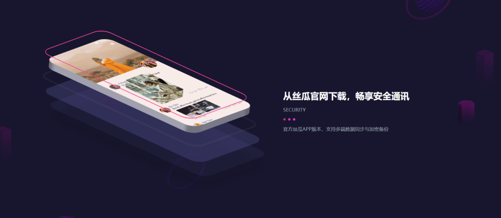

丝瓜聊天PC版怎么下载？
丝瓜聊天目前主要面向移动端，暂未推出官方PC版。如果需在电脑上使用，可通过安卓模拟器（如雷电模拟器、夜神模拟器等）安装丝瓜聊天App，在模拟器内运行使用。安装时请确保从正规平台下载App和模拟器，避免安全风险。

丝瓜聊天是否有官方PC版
官方是否推出Windows电脑版
暂无官方Windows版本： 截至目前，丝瓜聊天尚未正式推出Windows电脑版，官方应用主要支持安卓和iOS移动端，未在官网、主流应用市场或权威下载平台上线PC端独立版本。
官方公告和下载渠道说明： 用户可通过丝瓜聊天官方网站、官方微信公众号或官方认证的社交账号获取最新产品动态。如果没有明确发布PC版相关消息，建议勿轻信第三方宣传。
PC端使用需依赖模拟器： 想要在电脑端体验丝瓜聊天，通常需要借助安卓模拟器（如夜神模拟器、雷电模拟器等），通过模拟器安装移动端App，当前并无真正意义上的原生Windows桌面版。
如何确认PC版软件真伪
认准官方信息渠道： 判断PC版丝瓜聊天的真伪，首要原则是只信赖丝瓜聊天官方发布的信息，避免点击来路不明的推广链接或广告页面，尤其要警惕带有“破解”“绿色版”等字样的软件包。
查看数字签名与开发者信息： 合规软件一般会带有开发者数字签名和明确的公司信息，下载和安装过程中可在属性里查看是否由“丝瓜聊天”或官方企业发布。缺乏相关信息的软件建议不要安装。
防范钓鱼和恶意软件风险： 许多打着“丝瓜聊天PC版”名义的软件实为第三方篡改产品，容易被植入病毒、木马或窃取账号数据。遇到需输入账号密码、扫码登录等敏感操作时，务必再次核实来源，确保信息安全。
使用安卓模拟器运行丝瓜聊天
常见安卓模拟器推荐工具
夜神模拟器（NoxPlayer）： 夜神模拟器以流畅、兼容性好著称，适配绝大多数社交类和娱乐类App，界面简洁，支持多开功能，适合在PC上长期使用丝瓜聊天等移动端应用。
雷电模拟器（LDPlayer）： 雷电模拟器同样支持丝瓜聊天等多款主流App，性能稳定，操作便捷。其针对Windows环境优化较好，拥有丰富的快捷键设置，适合不同需求的电脑用户。
逍遥安卓模拟器（MEmu）： 逍遥模拟器界面美观，支持高分辨率显示，兼容各类安卓应用和游戏，内置应用商店，便于直接搜索并下载安装丝瓜聊天等软件，适合新手和日常使用。
模拟器安装丝瓜聊天的基本流程
下载安装安卓模拟器： 首先在电脑浏览器中访问夜神、雷电或逍遥模拟器的官网下载页面，选择适合系统版本的安装包下载安装，按提示完成模拟器的基础环境配置。
配置模拟器并登录账号： 启动模拟器后，可按提示进行分辨率、性能等个性化设置。部分模拟器需绑定谷歌账号或应用商店账号，以便后续下载安装丝瓜聊天等第三方App。
在模拟器中安装丝瓜聊天App： 一般有两种方式安装：其一是通过模拟器自带的应用市场搜索“丝瓜聊天”并点击下载；其二是将手机或官网下载的apk安装包拖入模拟器界面，模拟器会自动识别并完成安装，之后即可像手机一样注册、登录、使用丝瓜聊天各项功能。

丝瓜聊天PC版下载安装步骤详解
如何下载丝瓜聊天安卓安装包
通过应用商店获取APK包： 用户可在手机的应用商店（如华为应用市场、应用宝等）搜索“丝瓜聊天”，下载安装后利用专业工具（如APK提取器）将已安装的APK文件导出至电脑备用。
访问官方或可靠平台下载： 如果手机应用商店无法直接获取APK，也可以访问丝瓜聊天的官方网站或知名第三方安卓应用市场（如豌豆荚、APKPure等）下载原版APK安装包，务必认准官方或信誉高的平台，避免下载到恶意篡改版。
确保APK包完整无毒： 下载完成后，建议使用电脑端的杀毒软件对APK包进行一次全面查杀，确保文件无病毒、无木马，避免后续模拟器安装中出现风险，保证账号和设备安全。
在模拟器中导入并安装App
打开模拟器准备安装： 启动夜神、雷电或逍遥等安卓模拟器，在主界面找到“APK安装”按钮（部分模拟器为“+”或“添加APK”），为后续手动安装作准备。
拖拽或浏览导入APK文件： 直接将电脑中的丝瓜聊天APK安装包拖入模拟器窗口，也可以点击模拟器界面上的“APK安装”按钮，手动浏览选择下载好的APK文件，系统会自动开始安装。
完成安装并注册登录： 安装完成后，在模拟器桌面可看到丝瓜聊天的图标，双击打开即可进入App。接下来可像手机端一样进行账号注册、验证码登录、设置兴趣标签等，享受PC端丝瓜聊天的全部功能体验。

丝瓜聊天PC版使用环境要求
运行模拟器的最低系统配置
操作系统基础要求： 主流安卓模拟器一般要求电脑运行Windows 7及以上版本（包括Windows 8、Windows 10、Windows 11），部分模拟器也支持Mac OS，但对硬件兼容性要求更高，建议优先选择Windows平台。
处理器和内存门槛： 至少需要双核处理器（如Intel i3及以上）和4GB内存，这一配置可保证模拟器基本启动和丝瓜聊天等日常社交应用的流畅运行。低于该配置可能出现安装失败或运行卡顿问题。
硬盘空间和显卡支持： 推荐预留至少10GB以上的可用硬盘空间，模拟器及App数据会占用较多磁盘资源。集成显卡可满足基础需求，但部分模拟器在图像渲染时对独立显卡支持更好。
保证运行流畅的硬件建议
推荐更高配置电脑： 为获得更好的使用体验，建议选择四核及以上处理器（如Intel i5、i7或同等级AMD）、8GB或更大内存，能有效提升丝瓜聊天在模拟器内的响应速度和多任务处理能力。
固态硬盘提升读写速度： 安装操作系统和模拟器到SSD固态硬盘上可大幅减少程序加载和App切换等待时间，尤其在多开多个聊天窗口或同时运行其他大型应用时优势明显。
开启硬件虚拟化功能： 进入电脑BIOS设置，开启VT-x（Intel）或AMD-V（AMD）等虚拟化技术，可提升模拟器的性能表现，让丝瓜聊天及其他App运行更顺畅、更稳定。
丝瓜聊天电脑版与手机版区别
使用界面和功能差异对比
适配布局与操作方式不同： 丝瓜聊天手机版界面专为竖屏手机优化，功能入口、聊天窗口、表情栏和语音入口等均为手指操作设计。而电脑版依托安卓模拟器，界面以“横屏”或“放大模式”显示，部分按钮可能因适配问题略有偏移，界面元素排列也会有所不同。
通知推送机制区别： 手机版支持原生消息推送，锁屏下也能收到新消息提醒。电脑版则依赖模拟器消息弹窗，若模拟器未置顶或未开启相关权限，可能漏接部分消息，通知及时性略低。
系统权限与功能兼容性： 部分移动端功能（如原生摄像头扫码、通讯录读取）在模拟器环境下可能受限，部分功能可能提示“仅支持手机使用”或需要手动调整模拟器权限配置。
聊天体验和操作方式对比
输入与互动方式区别明显： 手机版以触屏输入为主，支持滑动、点击、长按等手势操作，发送图片、表情和语音快捷流畅。电脑版依赖键盘输入，文字聊天效率提升，但手势类操作需用鼠标模拟，语音和图片发送操作流程相对繁琐。
多窗口与多任务能力： 电脑版可借助模拟器多开，允许同时登录多个账号或并行处理多场聊天，适合需要同时管理多个社交圈的用户；手机版则一般只支持单账号运行，操作上更为单一和聚焦。
稳定性和兼容性表现差异： 手机版因为是原生适配，运行稳定，耗电和网络适配优于模拟器。电脑版依赖于模拟器软件的优化程度，有时会遇到卡顿、黑屏或异常退出等问题，体验会因电脑硬件和模拟器配置而有所不同。